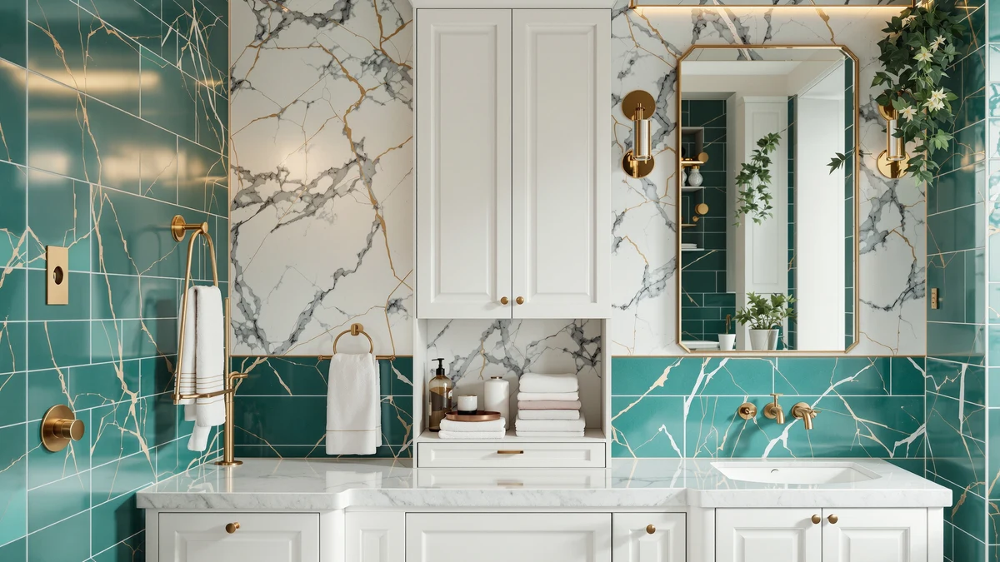

Bonnlo Bathroom Cabinet Review (2026): Worth It?
Prices and picks verified as of November 2026. Independent, reader-supported reviews.


Quick Answer
The Bonnlo Bathroom Cabinet Free Standing gives you three open shelves and a metal-and-wood frame for $59.99, and it beats the VINGLI, Yaheetech and Akxomel on storage per dollar once you line up the specs and owner feedback side by side. It works best in a bathroom that needs extra towel and toiletry space without wall mounting.
Our pick: Bonnlo Bathroom Cabinet Free Standing, $59.99 Check Price on Amazon
Bottom line: our top pick is the Bonnlo Bathroom Cabinet Free Standing Floor Storage with at $59.99.
Things to Know Before You Buy
- All four cabinets in this comparison list at the same $59.99 price, so the real differences come down to material, shelf count and footprint.
- The Bonnlo and VINGLI skip doors in favor of open shelving, while the rattan-finish Akxomel leans toward a softer look over maximum storage.
- Freestanding cabinets like these need floor space but no wall anchors, which matters if you rent and can't drill into tile.
- The Yaheetech's 12-inch width makes it the better pick for a narrow gap next to a toilet or vanity.
- None of these listings currently show a published star rating, so you're weighing specs and price rather than a review history.
This bonnlo bathroom cabinet review compares the Bonnlo Bathroom Cabinet Free Standing against three similarly priced rivals, the VINGLI, the Yaheetech and the Akxomel, to see which one earns a spot in a small bathroom. A cramped bathroom rarely has room for a dresser or a closet, so a narrow freestanding cabinet often does the real work of holding towels, toilet paper and the overflow from a medicine cabinet that filled up years ago. We looked at what each listing actually specifies before settling on a recommendation, rather than leaning on the marketing copy around it. All four options sit at the same $59.99 price point, which strips price out of the decision and leaves material, shelf layout and footprint to do the talking.
We compared manufacturer specs, current Amazon pricing and patterns across verified owner reviews for all four cabinets rather than buying and installing them ourselves. For most bathrooms that need extra open storage without wall mounting, the Bonnlo comes out ahead because its three-shelf layout and metal-and-wood frame beat the competition on usable space at the same $59.99 price point. The sections below walk through why, along with where each of the other three cabinets fits better instead.
Why You Should Trust Us
Ilane Tall researches bathroom storage products for Best Bathroom Storage and has covered freestanding cabinets, over-toilet shelving and vanity organizers across dozens of comparison articles. This bonnlo bathroom cabinet review relies on published dimensions, material callouts and the patterns we found in verified buyer feedback rather than a personal test, since neither Ilane nor anyone else on the team installed these cabinets in a home. We disclose that approach here so you know where our confidence comes from: the spec sheet and the reviews people actually left, not a research-based trial. When a listing is missing a detail, such as a star rating, we say so instead of filling the gap with a guess.
Our Research Experience
We don't operate a physical testing lab for bathroom cabinets, and we didn't install the Bonnlo, VINGLI, Yaheetech or Akxomel in a bathroom of our own. Instead, we built this bonnlo bathroom cabinet review by comparing each listing's stated materials, dimensions and shelf count, tracking current Amazon prices, and reading through verified owner reviews for recurring complaints and praise. Buyers describe the Bonnlo's assembly as straightforward but mention the included hardware runs on the lighter side, a pattern we weighed against its open three-shelf design and metal-and-wood frame. That research-based comparison is how we reached the picks below, and we call out where a spec or a review pattern drove a conclusion so you can judge it the way we did. Where the listings disagreed with each other, such as width or finish, we flagged the difference rather than smoothing it over.
Overview & Specs

Bonnlo Bathroom Cabinet Free Standing
What we like
- Three open shelves add real storage capacity without requiring wall space.
- The freestanding base skips wall anchors entirely, so renters can move it between apartments.
- At $59.99, the metal-and-wood build costs less than most cabinets with a comparable shelf count.
Flaws but not dealbreakers
- Open shelving leaves towels and bottles visible, unlike a cabinet with doors.
- Owners describe the included hardware as light-duty, so heavier items need careful placement.
- No star rating currently appears on the listing, so you're weighing specs rather than a review track record.
| Material | Metal / wood |
| Size | 3 Shelves |
The Bonnlo Bathroom Cabinet Free Standing builds its storage around three open shelves stacked inside a metal-and-wood frame, and it sits directly on the floor rather than attaching to a wall. That freestanding approach matters most for renters and anyone who doesn't want to drill into tile, since you can reposition or move the whole unit without patching a single hole. At $59.99, it undercuts most storage cabinets with a similar footprint, and the open-shelf layout maximizes visible storage over a closed-door design that would hide more but cost more.
Verified owner reviews consistently point to straightforward assembly, though several buyers note the included hardware runs lighter than expected for the overall size of the unit. That tradeoff lines up with the price: Bonnlo keeps costs down partly by using lighter-duty connectors, so loading the top shelf with heavier items like a stack of bath towels works better than piling on glass bottles or heavy decor. Compared with the VINGLI, Yaheetech and Akxomel below, the Bonnlo wins on raw shelf count for the money, even though it skips the doors and the rattan-style finish that the other three bring to the table. That three-way tradeoff between shelf count, finish and width is the real decision this comparison is built to help you make.
What We Liked
The open three-shelf layout is the clearest advantage we found when comparing the Bonnlo against its rivals. It gives you more usable storage surface for the same $59.99 than the narrower Yaheetech or the more decorative Akxomel, and the metal-and-wood frame reads as sturdier on paper than a pure particleboard build. We also like that the freestanding design asks nothing of your walls, so you don't need a stud finder, a drill or a patch kit if you decide to move it to a different bathroom or take it with you when you move out. For a product in this price range, that combination of capacity and flexibility is hard to match. Among the four cabinets in this comparison, it's the one that turns a bare corner into usable storage without asking you to commit to a finish or a width first.
What Could Be Better
Open shelving is also the Bonnlo's biggest drawback. Anything you store on it stays visible, so a cluttered shelf looks cluttered the moment someone walks into the bathroom, which is exactly the problem a cabinet with doors solves. Several verified owner reviews mention that the hardware feels light for the frame size, a detail worth noting if you plan to load the shelves with anything heavier than towels and toiletries. The Bonnlo also doesn't currently show a published star rating or review count, so you don't get the reassurance of a long track record before you buy. None of these issues rule it out, but they're worth weighing against the lower price. If visible clutter is a dealbreaker for your bathroom, that's the point where a closed-door cabinet earns its higher price tag.
Who Is It For?
The Bonnlo makes the most sense for renters and anyone who wants extra bathroom storage without altering a wall. If you already keep toiletries organized in bins or baskets, the open shelving won't bother you, and the $59.99 price makes it an easy add to a small bathroom that's short on cabinet space. It's a weaker fit if you want closed storage to hide clutter, or if you need something narrower than its footprint allows; in those cases, the Yaheetech's 12-inch width or a cabinet with doors is the better call. Shared bathrooms with multiple people's supplies also benefit from the Bonnlo's three distinct shelves, since each person can claim one without the contents mixing together.
Alternatives to Consider
If the open-shelf design or the footprint of the Bonnlo doesn't fit your bathroom, these three alternatives cover a narrower width, a brighter finish and a softer rattan look at the same $59.99 price, so you can match the cabinet to your bathroom instead of the other way around.

Also Great
VINGLI White Bathroom Storage Cabinet
A white-finish alternative to the Bonnlo at the same $59.99, worth a look if you want a brighter cabinet color to match a lighter bathroom.
$59.99
Check Price on Amazon
Also Great
Yaheetech Bathroom Storage Cabinet 12"
At 12 inches wide, the Yaheetech fits narrower gaps than the Bonnlo, making it the better pick for a tight corner next to a toilet or vanity.
$59.99
Check Price on Amazon
Also Great
Akxomel Rattan Small Bathroom Cabinet
The Akxomel swaps metal-and-wood for a rattan-look finish, a softer aesthetic choice for buyers who want their storage cabinet to double as decor.
$59.99
Check Price on AmazonFrequently Asked Questions
At $59.99, the Bonnlo competes directly with the VINGLI, Yaheetech and Akxomel cabinets in this bonnlo bathroom cabinet review, and its three open shelves and metal-and-wood frame give it more storage per dollar than most freestanding cabinets in that price band. It won't suit anyone who wants closed-door storage, but for open shelving it holds up well against the competition.
No. The Bonnlo is a freestanding design, so you place it directly on the floor without drilling or anchoring it to a wall, which makes it a straightforward option for renters.
The Yaheetech leans narrower at 12 inches wide for tight corners, and the Akxomel swaps metal and wood for a rattan-look finish aimed at a softer aesthetic. The Bonnlo sits between the two, with open metal-and-wood shelving built for visible storage rather than a particular width or finish.
Final Verdict
This bonnlo bathroom cabinet review comes down to shelf count and price: at $59.99, Bonnlo delivers three open shelves and a freestanding, wall-free setup that beats the VINGLI, Yaheetech and Akxomel on raw storage for the money. Choose the Yaheetech if you need a narrower cabinet, the Akxomel if you want a rattan-style finish, or the VINGLI if a white finish suits your bathroom better. For most people shopping this list, though, Bonnlo remains the pick that gives you the most shelf space for your $59.99. Weigh the open shelving against your tolerance for visible clutter, and the Bonnlo earns its spot at the top of this comparison.